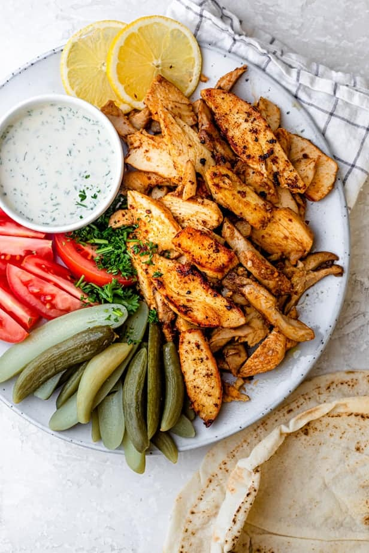

Chicken Shawarma like never before!

Origins
Chicken Shawarma is a popular Middle Eastern dish that originated in the Ottomon Empire, but has roots accross all Middle Eastern countries, including Lebanon and Syria.
It consists of meat cut into thin slices, stacked in a cone-like shape, and roasted on a slowly-turning vertical rotisserie or spit.
Ingredients
- 1 kg of Chicken Thighs
- 2 TBSP of Yoghurt
- 2 TBSP of Garlic paste
- 3 TBSP of Oliver Oil
- 1 TBSPof Sumak
- 1 TSP of Cumin powder
- 1 TSP of Corriander powder
- 1 TSP of cinnamon powder
- 2 TSP of Shawarma Masala
- 1 TSP of Turmeric
- 2 TSP of Paprika
Method
- First begin by combining all of the ingredients together, creating a marinade for the chicken.
- Place the chicken within the marinade and allow to marinade anywhere between four to twentyfour hours.
- When ready to cook, make sure you take the chicken out an hour before so that it can reach room temperature and cook more evenly.
- Cook the chicken over a high eat until it chars nicely on both sides, then reduce the heat and cook on low until chicken is fully cooked.
Back to home